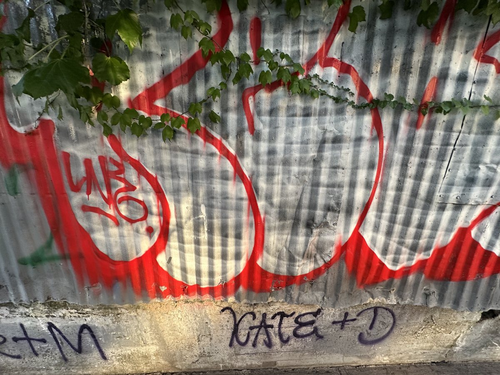

INDEX
UNDO
CLEAR
SOUND OFF
WRITING
THE CITY
NYC STREET ART
& GRAFFITI
HOLD RIGHT CLICK TO SPRAY
↓
01 / A BRIEF HISTORY OF WRITING
CRAIG CASTLEMAN
EARLY HITS:
QUANTITY
AND LOCATION

NEW YORK CITY / JULIA QIAN, 2026
READ THE CHAPTER
↗
183
GETTING UP / 1982
01
OFF THE PAGE.
ON THE WALL.
PHOTOGRAPHS BY JULIA QIAN
CLOSE ×
UNDO
CLEAR
JULIA QIAN / NEW YORK CITY, 2026